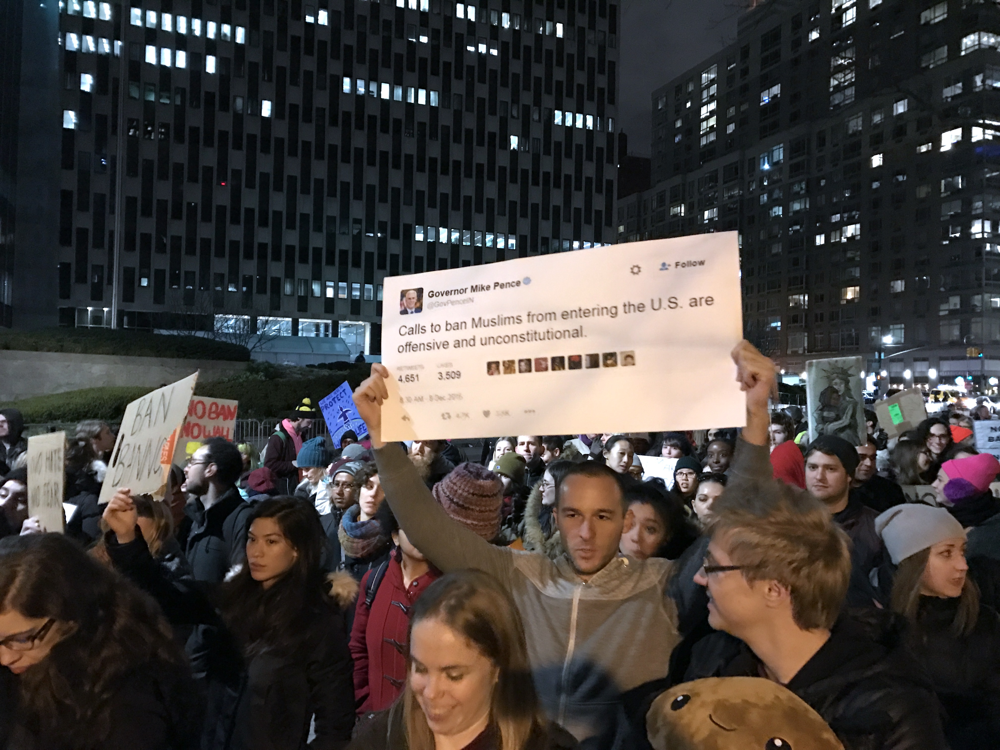
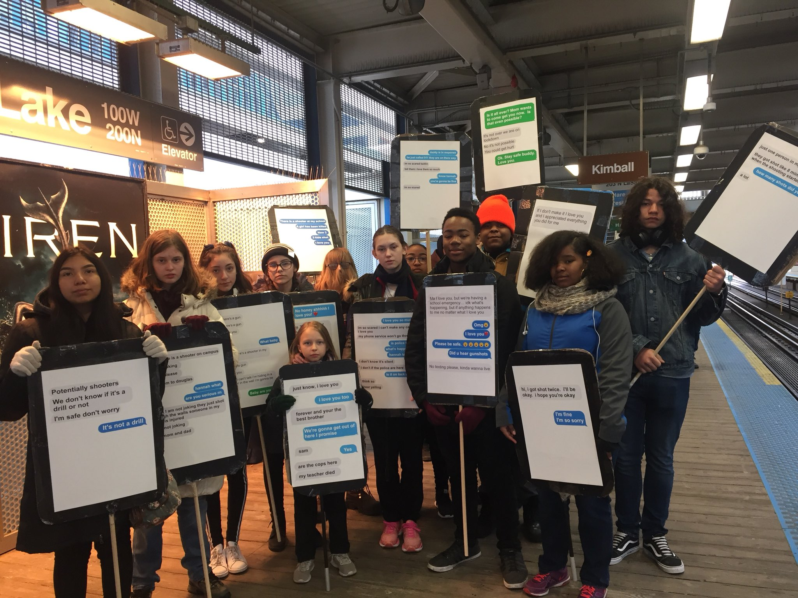
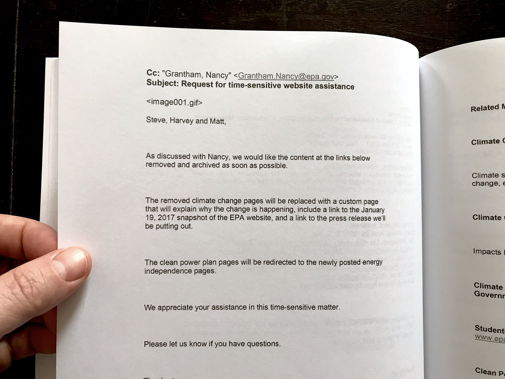
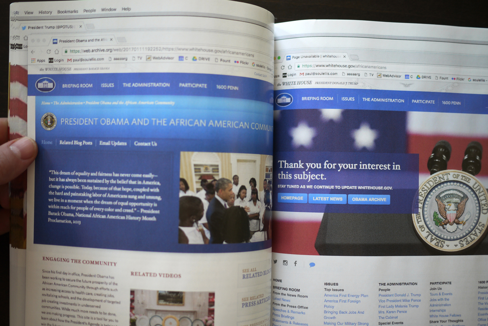
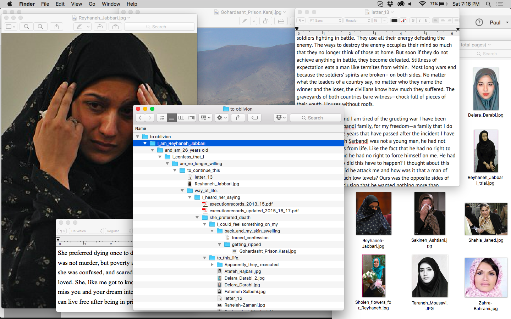

**artbook.printedweb.org/workshop** Urgency Print Lab → A slow web workshop in ten steps.
120 min

February 1, 2017 (NYC)

March 24, 2018 (Chicago)



1—Take out your device. Set it to not go to sleep.
2—Choose one image from your camera roll to share with the group. 5 min
3—Let’s gather the devices together to take a look. 10 min
4—Now, put your devices away.
5—Take some time to think about the images and messages that you’ve seen recently on the web.
What’s memorable?
What’s missing?
Who/what do you wish you hadn’t seen?
Who/what should be more visible?
What’s got value?
What’s worth circulating?
Write about images and messages that you wish for. That you wish to exist, or to not exist. Consider your relationship to the web, how you consume, how you share: your habits, your routines, your internet desires and fears. Be as specific as possible. 10 min
6—Now, open your device to access the web.
7—Look for images and messages that you believe should be slowed down and examined more closely. Search for urgent material. It could be a single tweet or photo, or someone’s entire feed. Images you want to draw attention to, or deface, or celebrate, or amplify. Make some selections and arrange them on your desktop. Feel free to incorporate your writing, too. 20 min
8— Now let’s scan and print! 20 min
9— Cut, tape, draw, write, and collage the printed material onto 8.5 x 11 sheets. These will become the pages of our collaborative publication. 40 min
10—Circulate the URL! artbook.printedweb.org to download our publication: Urgencyprintlab.pdf